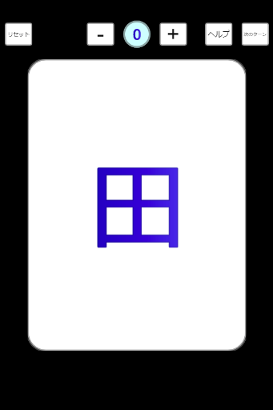

あるないん 遊び方
遊び方１：連想あるないん
概要：親と関連のありそうなカードを出すゲーム
プレイ人数:3－9名程度
プレイ時間：5分－
基本はシャッフルなしでスタートしますが、
お子様と遊ぶ時などは適宜ありにしてください。
ゲームを開始すると画面に9枚の手札が現れます。
最初は画面を誰にも見せないようにしておいてください。
はじめに、じゃんけんで最初の親を決めます。
親は9枚の漢字カードから1枚選択して場に出します。
漢字カードはなるべく色々な漢字と関連付けられそうなものを選びます。
（シャッフルありの場合は出す前にシャッフルできます）
例えば親が「山」なら、子は「川」「里」「田」等を選ぶと
「自然」「田舎」のようなくくりで親のカードと関連付けられます。
親から時計回りに、子もカードを選択して場に出します
（シャッフルありの場合は出す前にシャッフルできます）。
子は親が出したカードに関連がありそうなカードを選んで出します。

全員のカードが出そろったら、子の各カードが親のカードと
関連があるかどうか多数決で決めていきます。
（親/子）
田、虫、竹は山と関連アリだね。
（子１）
島はアリじゃないかな。庭はナシ。
（子２）
そうだね。島はアリでいいかな。
（子５）
でもほら、田舎は庭が広いから・・・
（子１）
ないな・・・
（子２）
ねーよ
（親）
じゃあナシかな・・・
（子５）
えー・・・
多数決で同数の場合は親が決めます。
（親）
多数決の結果、島は同数なのでアリとします。
判定が終わったら、親は「ある」の数を点数として、
子は自分が「ある」だったら１点加算します。
親（「ある」が５枚）
子１－４（「ある」）
子５（「ない」）
得点を加算したら時計回りに親を移動し、次のターンに進みます。
これを１周繰り返して、一番得点の高い人が勝ちです。
最高得点が同じ場合はもう一周繰り返します。
遊び方２：連鎖あるないん
概要：親のカードと熟語を作るゲーム
プレイ人数:４－9名程度
プレイ時間：10分－
漢字多め（1-6年生）、シャッフルありでスタートします。
シャッフル回数は
3人プレイなら10回
4人プレイなら6回
5人以上なら5回
を目安とし、適宜調整してください。
親が最初のカードを選択して場に出します。
カードはなるべく単語が作りにくいものを選びます。
子は親が出したカードの上下左右につながる文字を
提示された９文字から探します。
熟語をネット等で調べるのは「あり」です。
例えば親が「警」を出したら、県/婦/察 等を探します。
すでに「婦」「警」のように並んで出されていたら
「婦」につなげて「人」「主」等も置くことができます。
提示された９文字から見つからなければパスをし、
パスをしている間に一度シャッフルします。
親以外で最初に置いた人に人数-１点（５人プレイなら4）、
次に置いた人に人数-2点（５人プレイなら3）、が加算されます。
シャッフルを使い切っても最後まで置けなかった人は０点、
親は最後まで置けなかった人数ぶん得点が加算されます。
得点を加算したら時計回りに親を移動し、次のターンに進みます。
これを１周繰り返して、一番得点の高い人が勝ちです。
最高得点が同じ場合はもう一周繰り返します。
twitter:@emesiw
ad